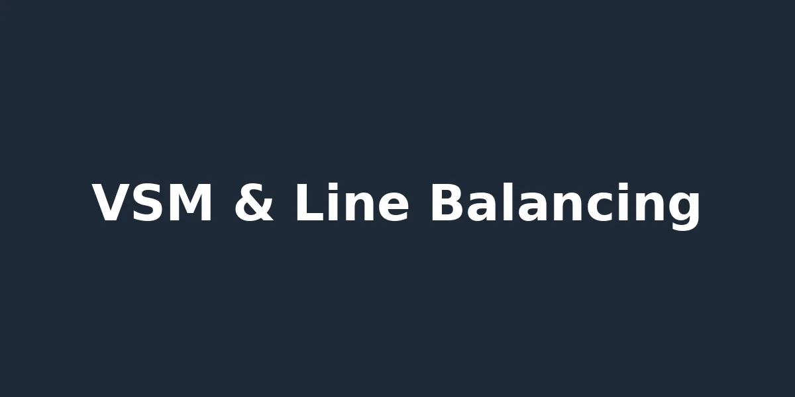
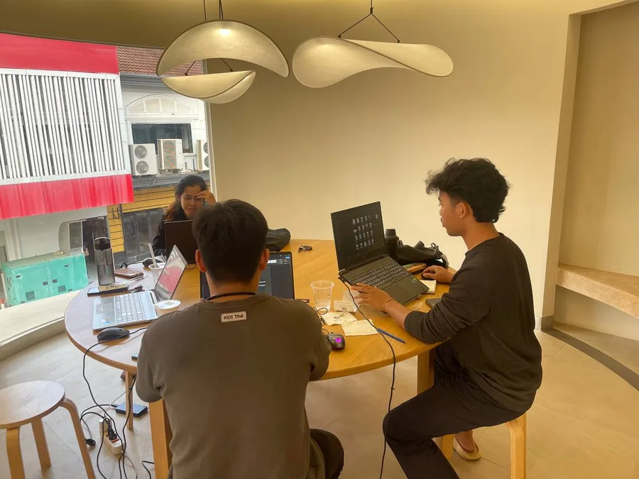
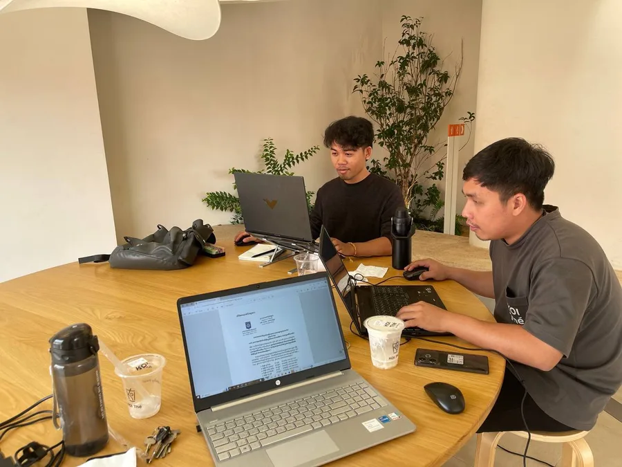

From operations breakdown and line balancing on the sewing floor,layouts and live custom apps — I build the tools that connect what's happening on the floor to what the enterprise systems say is happening.
Featured: People First & Workplace Culture spotlightI'm transitioning from IE Lean & Innovation Supervisor into a Lead Engineer role in Siem Reap, bridging shop-floor systems engineering with data-driven software tooling. My work spans operations breakdown and SMV estimation, AutoCAD/SketchUp facility layouts, and a suite of live custom apps I've built and deployed for the factory floor.
Looking ahead, I'm focused on executive systems engineering — ERP data accuracy, BOM structural integrity, and bridging floor telemetry directly to enterprise data.
Operations breakdown, SMV estimation, time studies, line balancing, and capacity planning. Sewing line schedule planning, machine allocation, spare parts management, and preventive maintenance scheduling. Garment innovation tools and automation integration on the sewing floor.
AutoCAD Web floor planning, SketchUp 3D modeling, and precision rack/storage design. Visual and UI layout design in Excel, Photoshop for posters and internal tools.
Live custom operational apps deployed across the factory floor — built with HTML/CSS/JS, versioned on GitHub. Power Query data pipelines and AI-assisted automation workflows.
Executive systems engineering: ERP data accuracy, Bill of Materials structural integrity, product costing analytics, and bridging floor telemetry directly to enterprise data.

A live, deployed web app for tracking heavy-duty rack and storage assets across the factory in real time — location, status, and allocation history in one place instead of scattered across paper and memory.
Read Technical BreakdownA digital "passport" for every machine on the floor — centralizing maintenance history, manuals, and specs per asset so any machine's full documentation is one lookup away.
Read Technical BreakdownA live spare parts inventory app giving real-time visibility into stock levels and part locations — built to shrink the gap between a breakdown and the fix.
Read Technical Breakdown

Featured in a LinkedIn post spotlighting workplace culture.
View PostAlways open to discussing advanced industrial layouts, ERP data optimization projects, or custom software applications built for manufacturing environments.